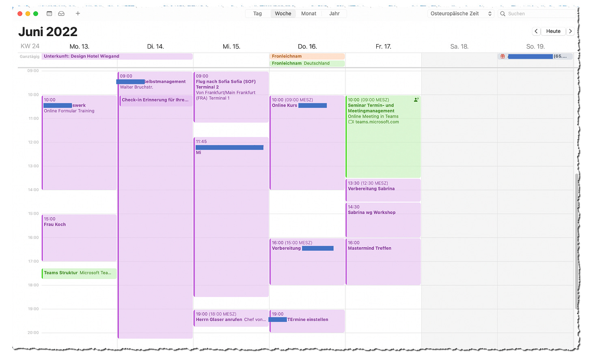
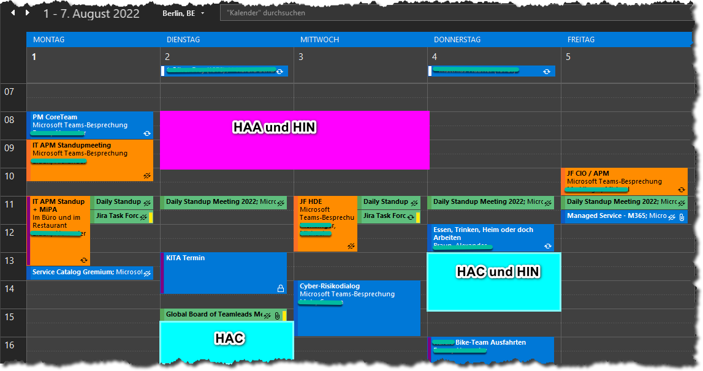
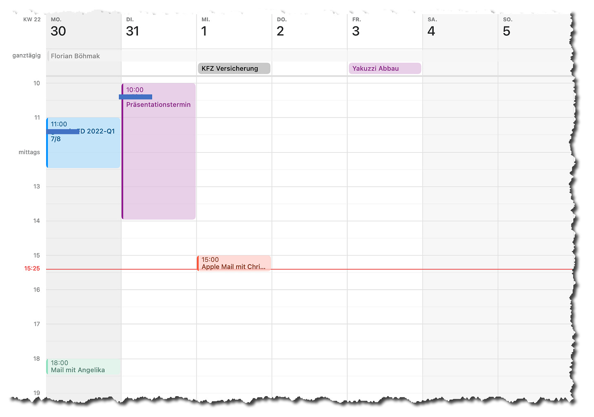
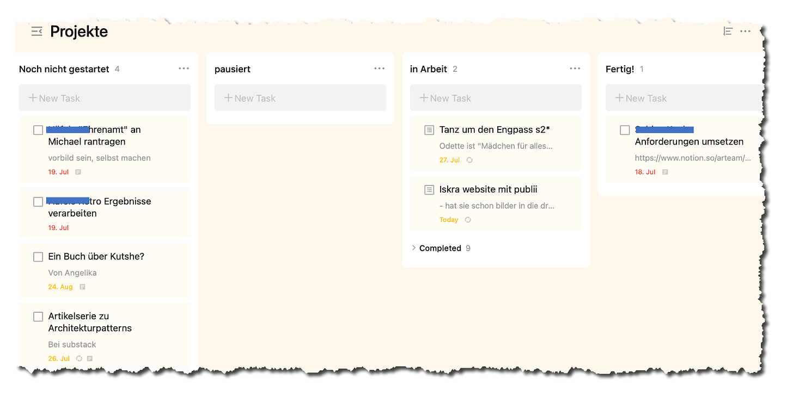

Richtige Kalenderpflege
“Zeig’ mir deinen Kalender und ich sage dir, was du willst.”
Richtige Kalenderpflege ist das A und O für die Erreichung von Zielen. Das ist mir heute bei Ansicht des Kalender eines Mitarbeiters eines Kunden wieder aufgefalllen.
Schon lange empfiehlt Andrea ihren Kunden ein solides Kalender-Management als Einstieg in den Ausstieg aus der Überlastung. Sie setzt auch einen ganz skeptischen Blick auf, wenn ihr jemand einen leeren Kalender zeigt — und im gleichen Atemzug unter großer Arbeitslast stöhnt.
Ja, tatsächlich glauben wir daran, dass die richtige Kalenderpflege zentral für verlässliche, systematische und entspannte Arbeit ist. Der Kalender soll nicht nur die Arbeitszeit strukturieren, sondern damit auch die gesetzten Prioritäten spiegeln. Am Kalender soll sich ablesen lassen, was wichtig und was dringend ist.
Aber nicht nur soll der Kalender das dokumentieren, er tut es immer. Ob Sie wollen oder nicht. Immer! Egal, wie Ihr Kalender aussieht, er ist ein Zeugnis ihrer Prioritäten und Werte. Er spiegelt die real existierenden Prioritäten wider — die sich von denen unterscheiden mögen, die das Unternehmen meint zu definieren, oder die einer flüssigen Arbeit aller dienen mögen.
Um das zu erklären hier zuerst der Kalender einer Woche von Andrea Kaden:

Sichtbarmachen von Prioritäten
Was sind ihre Prioritäten?
- Der Kalender ist fast komplett gefüllt. Andrea nimmt ihr eigene Empfehlung ernst. Was nicht im Kalender steht ist bei ihr vor allem eine Arbeitspause.
- Im Kalender finden sich nur wenige Meetings. Die meisten Blöcke stehen für Trainingssitzungen.
- Es finden sich neben Meetings und Trainings aber auch andere Arbeiten eingeplant, z.B. Vor-/Nachbereitungen oder Reisezeiten (die für Andrea oft Zeiten ungestörter Arbeit sind z.B. für “Housekeeping” Tätigkeiten).
Andreas Prioritäten sind klar zu erkennen. Die liegen auf Trainings mit “Anbahnung”, Vor-/Nachbereitung und Durchführung. Auf der Meta-Ebene liegt ihre Priorität auf Klarheit und Schutz von Zeiträumen, damit wirklich alle Arbeiten verlässlich getan werden.
Nun als Kontrast eines Woche aus dem Kalender des Mitarbeiters unseres Kunden:

Sieht das für Sie eher aus wir Ihr Kalender? Hervorzuheben ist hier zunächst, dass der Kalender augenscheinlich überhaupt für die Arbeitsorganisation genutzt wird. Das ist nach unserer Erfahrung nicht selbstverständlich und also sehr löblich! Aber was steht darin?
- Es finden sich vorwiegend Arbeitstermine, allerdings auch zwei private.
- Von 20 beruflichen Einträgen sind 100% Meetings.
- Für “Stillarbeitszeit” oder “Fokuszeit” müssen die Lücken zwischen den Meetings genügen.
Was ist die Priorität dieses Mitarbeiters? Wie sieht er seine Arbeit? Was meint er, ist sein Beitrag zum Unternehmen?
- Ich sehe erstmal ein Verständnis dafür, dass nur, was im Kalender steht, auch tatsächlich getan wird. Das lese ich aus den privaten Terminen heraus, die darin notiert sind. Dem Mitarbeiter ist es wichtig, dass die Zeit für sein Kind und seine Gesundheit nicht unter die Räder des Arbeitsalltags geraten.
- Angesichts des Grundverständnisses für den Nutzen eines Kalender muten die Lücken zwischen den Meetings zunächst seltsam an. Sie werden nicht genutzt, um die Aufgaben “eigener Projekte” zu erledigen. Gibt es die nicht? Oder wird die ungeplante Zeit für “Housekeeping” genutzt, das jederzeit für einen “Feuerwehreinsatz” bei anderen unterbrochen werden kann?
In Summe scheint mir die Priorität deutlich auf anderen zu liegen: “Die anderen kommen ohne mich nicht weiter. Für sie will ich da sein.” Deshalb ist der Kalender voll mit Meetings. Eine wirkliche Kalenderpflege im Sinne der eigenen Prioritäten ist nicht erkennbar.
Ob diese Priorität für das Funktionieren der Organisation vorteilhaft ist, lasse ich dahingestellt. An dieser Stelle geht es mir nur darum, dass sich eben die de facto Prioritäten am Kalender ablesen lassen.
Deshalb zum Abschluss noch ein Auszug aus meinem eigenen Kalender:

Das ist eine typische “Arbeitswoche” für mich.
- Im Kalender stehen Trainings und Meetings.
- Außerdem finden sich zwei Erinnerungen als “Ganztagestermine” darin (“KFZ-Versicherung” und “Yakuzzi Abbau”).
Das sieht sehr anders aus als in den vorangegangenen Beispielen. Wo liegt meine Priorität? Sichtbar sind Arbeitstermine. Damit könnte sie bei der Arbeit liegen. Verräterische sind aber nicht nur die Eintragungen, sondern auch das, was fehlt! Bei Andrea gibt es keine Lücken, dennoch findet sich manches nicht in ihrem Kalender. Beim Mitarbeiter des Kunden gibt es Lücken und manche Art Aufgaben haben keinen Eintrag im Kalender. Bei mir nun ist der Kalender vor allem leer; er ist quasi eine einzige Lücke. Was ist da los?
Andrea will jeder Aufgabe verlässlich Zeit widmen. Beim Mitarbeiter des Kunden steht die Zeit mit anderen an erster Stelle. Und bei meinem Kalender… da zeigen die großen Lücken, dass mir das Wichtigste die Lücken sind.
Fokus auf Flow
Mein Fokus liegt auf Flow. Ich will zu jeder Zeit frei sein, mich mit dem Thema beschäftigen zu können, das mich gerade am meisten motiviert. Mein Job ist also ganz augenfällig ein anderer als Andreas. Ich bin viel mehr “Kreativarbeiter”, während Andrea “zupackt und wegschafft”. Sie mag es klarer, ich mag es freier.
Außerdem ist ihre Arbeit wie die des Mitarbeiters beim Kunden viel mehr mit anderen verbunden. Beide verbringen viel Zeit synchron mit Kunden bzw. Kollegen. Ich hingegen arbeite vor allem “für mich allein”. Meine Arbeit ist asynchron zu anderen und wenig termingetrieben. Deshalb wähle ich nicht den Kalender zur Planung meiner Aufgaben, sondern eine simplere Aufgabenliste oder ein Aufgabenbrett wie dieses:

Der Kalender ist Teil der Arbeitspersönlichkeit. Niemand kann verhindern, dass der Kalender etwas über die eigenen Prioritäten ausdrückt. Damit ist der Kalender ein dankbarer Ansatzpunkt für Veränderungen, wenn die Arbeit beginnt, mehr Frust denn Lust zu machen. Naheliegende Fragen sind:
- Was steht im Kalender?
- Wie werden Lücken im Kalender erklärt?
- Was wird bewusst nicht im Kalender notiert?
- Welche anderen Mittel werden zur für die Aufgabenverwaltung genutzt?
Ausgehend von den Antworten auf diese sehr konkreten Fragen in Bezug auf die Effizienz der Kalendernutzung kann dann der Einstieg in eine Reflexion darüber gelingen, ob der Kalender auch effektiv genutzt wird. Sind die darin oder in anderen Mitteln notierten Aufgaben wirklich optimal gewählt und geschnitten? Wie wird mit Abhängigkeiten von anderen umgegangen? Auf welche Aufgabenfelder sind Aufgaben in welcher Menge verteilt? Welche Aufgabenfelder brauchen bzw. bekommen welche Kapazität?
Denn am Ende ist flüssige Arbeit immer eine Sache der Kapazität. Aufmerksamkeitsgestaltung ist Kapazitätsmanagement und das spiegelt sich in der Kalenderpflege wieder. Denn wo ließe sich besser die vorhandene und zugewiesene Kapazität überblicken als im Kalender?
Dieser Artikel erschien zum ersten Mal in meinem Newsletter bei Substack hier im Juli, 2022. Dort finden Sie auch weitere Artikel und können den Newsletter per E-Mail abonnieren.
Weitere Artikel

KI als Copilot für die Assistenz
KI in Form von ChatGPT & Co sind hervorragende neue Werkzeuge im Office-Alltag, um produktiver und ja, auch kreativer, zu werden. Neugier statt Angst ist angezeigt im Umgang mit diesen Werkzeugen, die wie andere Werkzeuge auch …

Veränderung braucht Gewohnheit
Sowohl im Berufs-als auch im Privatleben sind wir ständig im Veränderungsmodus. Manche Veränderungen wollen wir umsetzen, manche müssen wir mitmachen. Wir alles wissen, dass Veränderung nie leicht sind und je länger wir etwas auf …